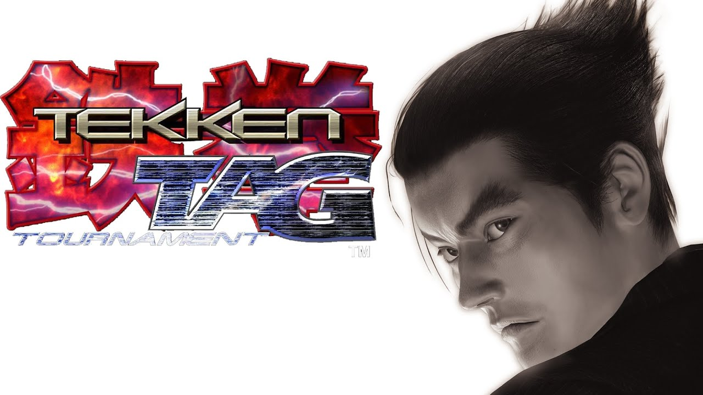

Date: 1999-07-21
Title: Tekken Tag Tournament
Summary: A unique entry that introduced tag-team battles, allowing players to switch between two fighters during matches.
Categories: Arcade, Classic
Type: Game Files
File Size: ~800 MB
Format: ISO / ROM
Region: Japan / USA / Europe
Platform: Arcade / PS2
Tekken Tag Tournament is a fan-favorite spin-off that introduced the tag battle system, letting players choose two characters and switch between them during fights. The game features a large roster including characters from previous Tekken titles, making it a celebration of the series. With improved graphics and smooth gameplay, it became one of the most popular Tekken games on both arcade systems and PlayStation 2.
Note: Support Original Game By buying Official CD of Tekken Tag 1 . --Tekken Tag 1 Can be Played By either a real Ps2 or By Ps2 Emulatores via Pc,Download link also include exclusive demo version of the game that can be played. Download